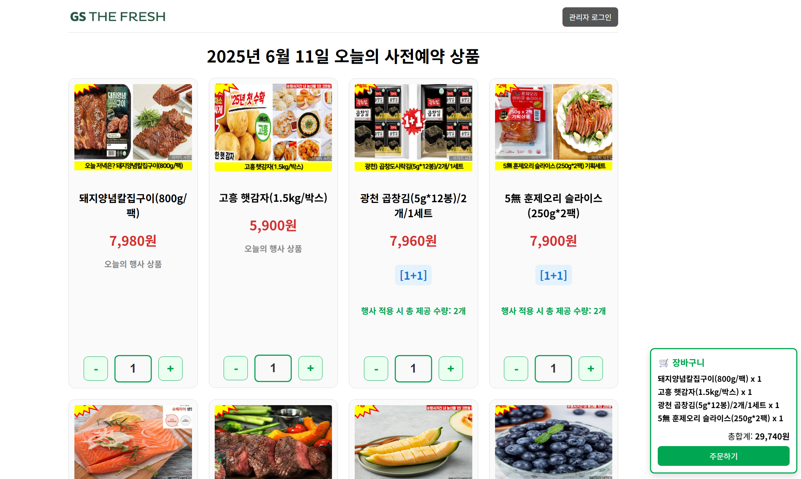
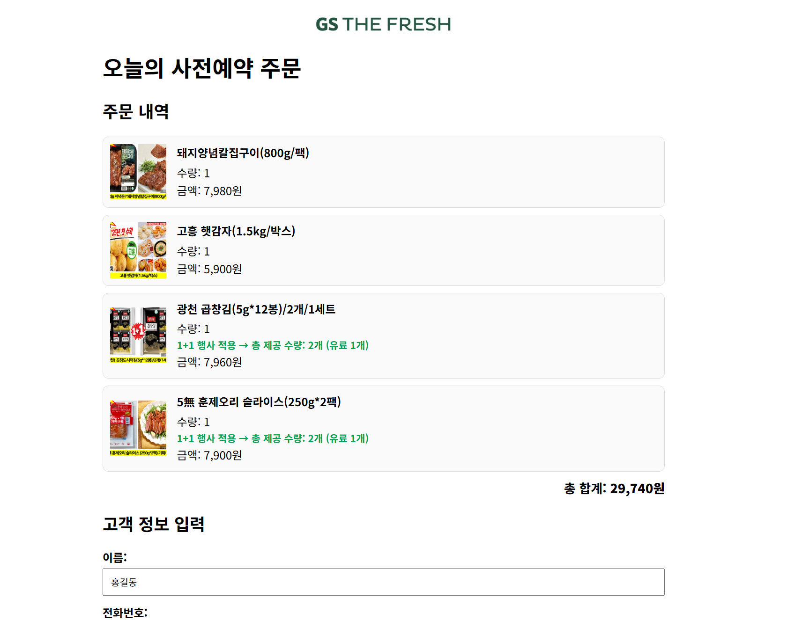
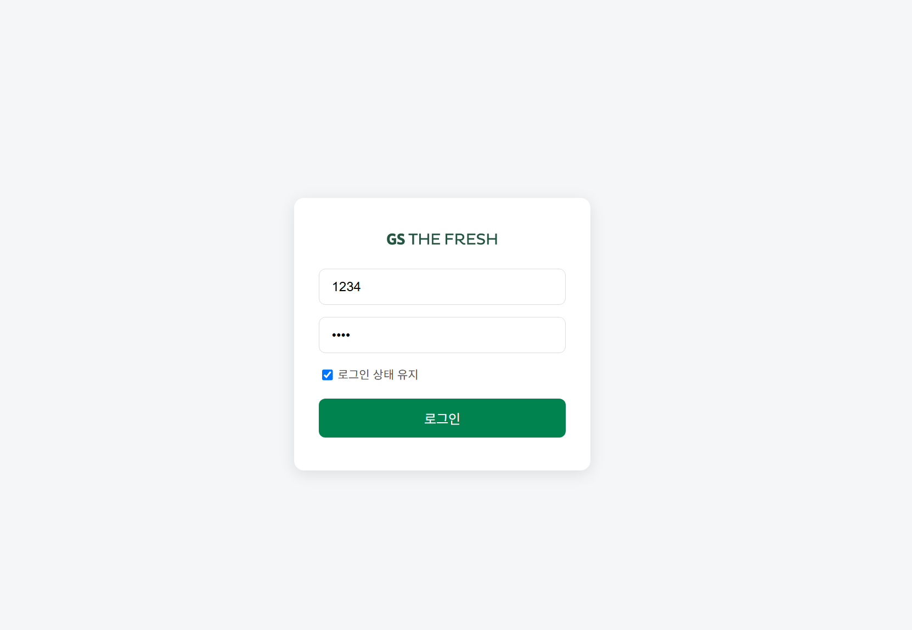
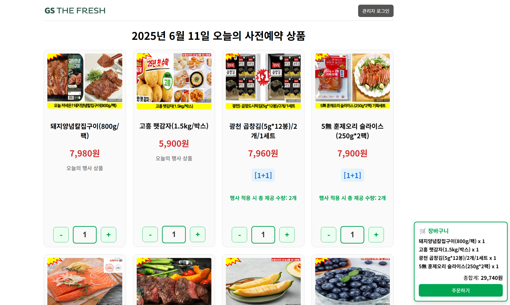
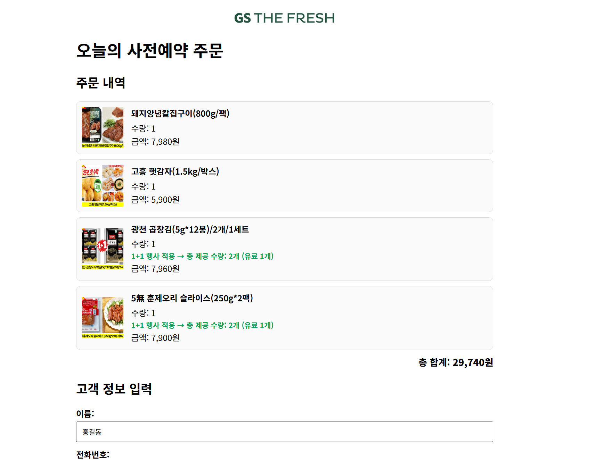
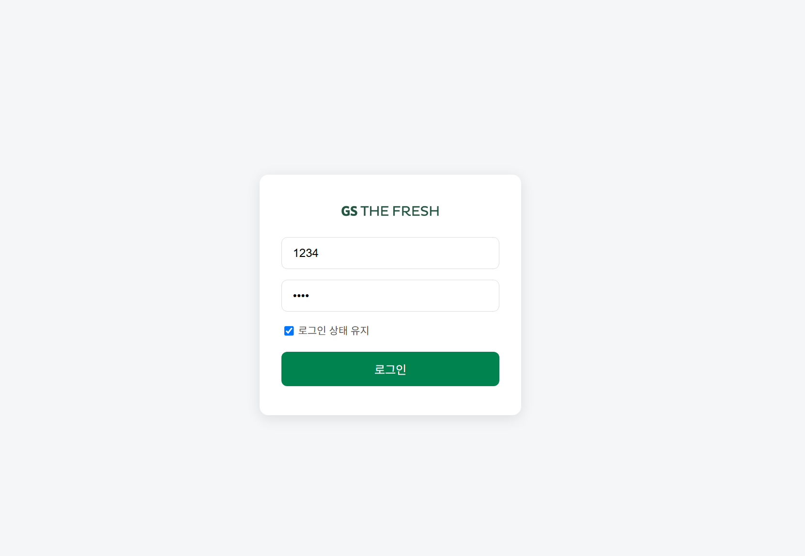
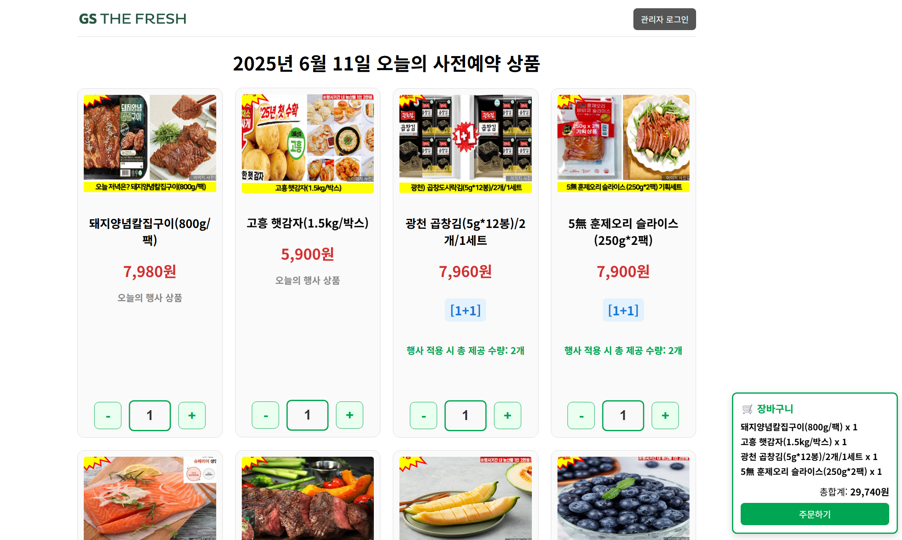
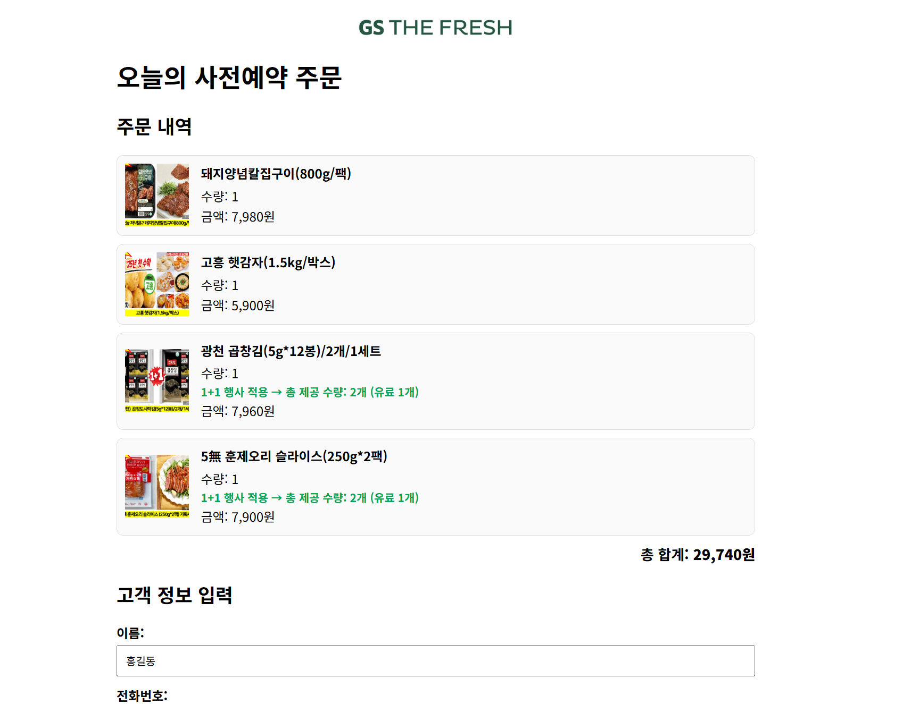
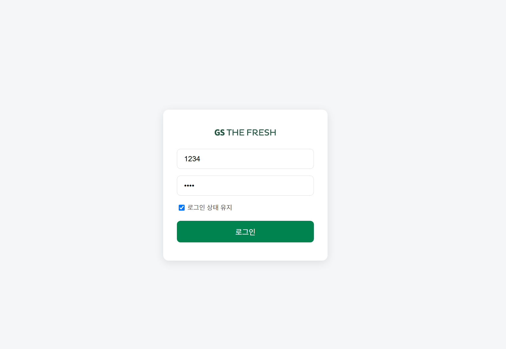

프로젝트 개요
 





GS THE FRESH 사전예약 시스템은 기존의 수기 사전예약
관리를 웹 기반으로 자동화한 프로젝트입니다.
사용자 친화적인 UI와 관리자 페이지를 통해 효율적인 상품 예약과 관리가
가능합니다.



GS THE FRESH 사전예약 시스템은 기존의 수기 사전예약
관리를 웹 기반으로 자동화한 프로젝트입니다.
사용자 친화적인 UI와 관리자 페이지를 통해 효율적인 상품 예약과 관리가
가능합니다.
기존 방식: 카카오톡 채팅방으로 주문 후 수기 입력
본 프로젝트는 GS THE FRESH 아르바이트 경험 중 발견한
비효율적인 업무 프로세스에서 출발했습니다.
기존에는 사전예약 상품 주문을
카카오톡 채팅방으로 하고, 이를 다시
수기로 엑셀에 입력하는 방식이었습니다.
이러한 반복적이고 오류 가능성이 높은 프로세스를 개선하기 위해
자동화 시스템 개발을 진행하게 되었습니다.
사용자는 오늘의 사전예약 상품을
확인 후 예약 가능
관리자 로그인 후
관리자 페이지 접근 가능
사전예약 현황 조회 기능 제공

통계 및 인기 상품 분석 기능 제공

사전예약 데이터
엑셀 다운로드 기능 제공
간편한 예약부터 통계 분석까지, 업무 효율성을 높이는 기능들로 구성된 시스템입니다.
프론트엔드 개발에 사용한 기술입니다.
백엔드 개발 및 API 서버 구축에 사용한 기술입니다.